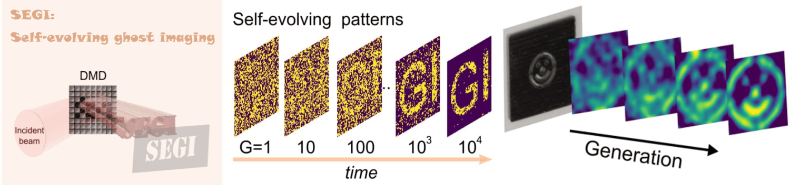

Publications
We are interested in devleoping new methods for Super-resolution Imaging | Optics in complex media | Nanophotonics | Single-pixel Imaging | Optical Fiber Sensing | Novel Imaging Methods, etc.
Our research articles are published in journals related to nanophotonics and optical imaging, such as Optica, Nano Letters, Advanced Materials, Advanced Science, Optics Express, etc.
Journal Papers:
-
Photoenergy harvesting by ammonium molybdate soft hydrogel drops
Z. Lu, X. Hang, Z. Zhao, L. Cheng, Y. Zeng, B. Li, M. Tian, B. Liu, X. Shan, H. Zhu, Z. Wang, M. Ma, J. Wang, Y. Gong, X. Zhong, Y. Wang, L. Chang & F. Wang,
Light: Science & Applications, 14(1): 372, 2025. [IF: 13.4, LINK].

-
Structured light meets machine intelligence
Z. Zhang, L. Kong, L. Zhang, X. Pan, T. Das, B. Wang, B. Liu, F. Wang, I. Nape, Y. Shen, and A. Forbes,
eLight, 5(1), 26, 2025. [IF: 32.1, LINK].
-
Dual-wavelength 3D single-pixel imaging based on gated photon counting
J. Liu, Z. Yang, Y. Tian, Z. Zhao, Z. Dong, B. Liu, Y. Yang, M. Li, Y. Yu,
Optics and Lasers in Engineering, 195, 109269, 2025. [IF: 3.7, LINK].
-
Advances in multiplexed photoelectrochemical sensors for multiple components
L. Ding, Z. Zhong, C. Chen, B. Liu, Z. Chen, L. Zhang, J. Mao, M. Zhang, Q. P. Su, and F. Cheng,
Chemical Engineering Journal, 159319, 2025. [IF: 13.4, LINK].
-
Electrically tunable coloration in polymer dispersed liquid crystal films for adaptive camouflage
W. Wu, X. Sun, X. Zhao, B. Liu, G. Wu, X. Zhang, B. Wang, X. Wang, X. Rong, and N. Liu,
”, Journal of Materials Chemistry C, 13, 9693-9704, 2025. [IF: 5.1, LINK].
-
Multi-resolution analysis for high-fidelity deconvolution microscopy
B. Liu ✉, and Fan Wang,
Light: Science & Applications, 14:1, 2025. [IF: 20.6, LINK].
-
Miniaturized spectrometer based on tunable electrochromic device
M. Tian, B. Liu ✉, Z. Lu, Y. Wang, Z. Zheng, J. Song, X. Zhong, and Fan Wang,
Light: Science & Applications, 13:278, 2024. [IF: 20.6, LINK].
-
Multi-photon super-linear image scanning microscopy using upconversion nanoparticles
Y. Wang, B. Liu ✉, L. Ding, C. Chen, X. Shan, D. Wang, M. Tian, J. Song, Z. Zheng, X. Xu, X. Zhong, and F. Wang,
Laser & Photonics Reviews, 2400746, 2024. [IF: 9.8, LINK].
-
Sub-femtonewton force sensing in solution by super-resolved photonic force microscopy
X. Shan, L. Ding, D. Wang, S. Wen, J. Shi, C. Chen, Y. Wang, H. Zhu, Z. Huang, S. J. Wang, X. Zhong, B. Liu, P. Reece, W. Ren, W. Hao, X. Lu, J. Lu, Q. P. Su, L. Chang, L. Sun, D. Jin, L. Jiang & F. Wang,
Nature Photonics, 18, 913–921, 2024. [IF: 35, LINK].

-
Temporal compressive edge imaging enabled by a lensless diffuser camera
Z. Zheng, B. Liu ✉, J. Song, L. Ding, X. Zhong, D. Mcgloin, and Fan Wang ✉,
Optics Letters, 49(11), 3058-3061, 2024. [IF: 3.6, LINK].
-
Large-area near-infrared emission enhancement on single upconversion nanoparticles by metal nanohole array
X. Li, Y. Wang, J. Shi, Z. Zhao, D. Wang, Z. Chen, L. Cheng, G. Lu, Y. Liang, H. Dong, X. Shan, B. Liu, C. Chen, Y. Liu, F. Liu, L. Sun, X. Zhong, and F. Wang,
Nano Letters, 24(19), 5831–5837, 2024. [IF: 10.8, LINK].
-
Computational and dark-field ghost imaging with ultraviolet light
J. Song, B. Liu ✉, Y. Wang, C. Chen, X. Shan, X. Zhong, L.-A. Wu, and Fan Wang,
Photonics Research, 12(2), 226-234, 2024. [IF: 7.6,
LINK, PDF].
-
Optical Nonlinearity Enabled Super-Resolved Multiplexing Microscopy
L. Ding, C. Chen, X. Shan, B. Liu, D. Wang, Z. Du, G. Zhao, Q. P. Su, Y. Yang, B. Halkon, T. T. Tran, J. Liao, I. Aharonovich, M. Zhang, F. Cheng, L. Fu, X. Xu, and Fan Wang
Advanced Materials, 2308844, 2023. [IF: 29.4, LINK].

-
Multi-functional dual-path self-aligned polarization interference lithography
J. Song, B. Liu, X. Shan, F. Wang, and X. Zhong,
Optics Express, 31(11), 17629-17644, 2023. [IF: 3.833, LINK].
-
Dual-mode adaptive-SVD ghost imaging
D. Wang, B. Liu ✉, J. Song, Y. Wang, X. Shan, X. Zhong, and F. Wang ✉,
Optics Express, 31(9), 14225-14239, 2023. [IF: 3.833, LINK].

-
Trapped aerosol sizes under fiber-based counter-propagation optical trapping
L. Zhang, A. Szmalenberg, K. Cook, B. Liu, L. Ding, F. Wang, and D. McGloin,
Journal of the Optical Society of America B, 40(2), 460-468, 2023. [IF: 2.058, LINK]

-
Lanthanide Ion Resonance-Driven Rayleigh Scattering of Nanoparticles for Dual‐Modality Interferometric Scattering Microscopy
L. Ding, X. Shan, D. Wang, B. Liu ✉, Z. Du, X. Di, C. Chen, M. Maddahfar, L. Zhang, Y. Shi, P. Reece, B. Halkon, I. Aharonovich, X. Xu, F. Wang ✉,
Advanced Science, 9(32), 2203354, 2022. [IF: 17.521, published as the inside back cover, LINK]
-
Exploiting Dynamic Nonlinearity in Upconversion Nanoparticles for Super-Resolution Imaging
C. Chen, L. Ding, B. Liu ✉, Z. Du, Y. Liu, X. Di, X. Shan, C. Lin, M. Zhang, X. Xu, X. Zhong, J. Wang, L. Chang, B. Halkon, X. Chen, F. Cheng, F. Wang ✉,
Nano Letters, 22(17), 7136–7143, 2022. [IF: 12.263, LINK]

-
Multiplexed structured illumination super-resolution imaging with lifetime-engineered upconversion nanoparticles
B. Liu, J. Liao, Y. Song, C. Chen, L. Ding, J. Zhou, and F. Wang,
Nanoscale Advances, 4(1), 30-38, 2022. [IF: 5.598, published as the front cover, PDF]

-
Single-pixel diffuser camera
B. Liu, F. Wang, C. Chen, and D. McGloin,
IEEE Photonics Journal, 13(6), 7800205, 2021. [IF: 2.443, PDF]
-
Self-evolving ghost imaging
B. Liu, F. Wang, C. Chen, F. Dong, and D. McGloin,
Optica, 8(10), 1340-1349, 2021. [IF: 11.104, PDF]

-
Optical Fingerprint Classification of Single Upconversion Nanoparticles by Deep Learning
J. Liao, J. Zhou, Y. Song, B. Liu, J. Lu, and D. Jin,
Journal of Physical Chemistry Letters, 12(41), 10242–10248, 2021. [IF: 6.475, PDF]

-
Preselectable Optical Fingerprints of Heterogeneous Upconversion Nanoparticles
J. Liao, J. Zhou, Y. Song, B. Liu, Y. Chen, F. Wang, C. Chen, J. Lin, X. Chen, J. Lu, and D. Jin,
Nano Letters, 21(18), 7659–7668, 2021. [IF: 11.189, Q1 Top, PDF]

-
Heterochromatic nonlinear optical responses in upconversion nanoparticles for super-resolution nanoscopy
C. Chen, B. Liu, Y. Liu, J. Liao, X. Shan, F. Wang and D. Jin,
Advanced Materials, 33(23), 2008847, 2021. [IF: 30.849, PDF]

-
Upconversion Nonlinear Structured Illumination Microscopy
B. Liu, C. Chen, X. Di, J. Liao, S. Wen, Q.P. Su, X. Shan, Z.Q. Xu, L.A. Ju, C. Mi, F. Wang, and D. Jin,
Nano Letters, 20(7), 4775-4781, 2020. [IF: 11.189, published as the front cover, PDF]

-
Video-rate upconverting display by optimizing lanthanide ions doped upconversion nanoparticles
L. Gao, X. Shan, X. Xu, Y. Liu, B. Liu, S. Li, S. Wen, C. Ma, D. Jin, and F. Wang,
Nanoscale, 12(36), 18595–18599, 2020. [IF: 6.895, PDF]

-
Quantitative lateral flow strip sensor using highly doped upconversion nanoparticles
H. He, B. Liu, S. Wen, J. Liao, G. Lin, J. Zhou, and D. Jin,
Analytical Chemistry, 90(21), 12356-12360, 2018. [IF: 6.785, Q1 Top, citation: 80, PDF]

-
Coloured computational imaging with single-pixel detectors based on a 2D discrete cosine transform
B. Liu, Z. Yang, X. Liu, and L. Wu,
Journal of Modern Optics, 64(3), 259-264, 2017. [IF: 1.657, citation: 80, rank 3rd place in most cited papers in 2017 of the journal, PDF]
-
Normalized iterative denoising ghost imaging based on the adaptive threshold
G. Li, Z. Yang, Y. Zhao, R. Yan, X. Liu, and B. Liu,
Laser Physics Letters, 14(2), 025207, 2017. [IF: 2.328, PDF]
-
Influence of turbid media at different locations in computational ghost imaging
B. Liu, Z. Yang, S. Qu, A. Zhang, and L. Wu,
Acta Opt Sinica, 36 (10), 1026017, 2016. PDF]
Conference Papers:
-
Hyperspectral single-pixel imaging using untrained neural network
M. Zhu, B. Liu*, Y. Wang, L. Zhai, N. Liu, and F. Wang,
Proceedings of SPIE, 13963, 139630G, AOPC 2025: Computational Imaging Technology, 2025. [Link]
-
Physics-informed ultra-low photon level single-pixel imaging
Y. Wang, B. Liu*, L. Zhai, M. Zhu, and F. Wang,
Proceedings of SPIE, 13963, 139630H, AOPC 2025: Computational Imaging Technology, 2025. [Link]
-
Differential single‑pixel video and audio recording via a rotating encoded disk
X. Liu, Z. Yang, M. Li, Y. Zhang, B. Quan, L. Wu, S. Zhou, and B. Liu*,
Proceedings of SPIE, 13647, 136470I, Third Conference on Space, Atmosphere, Marine, and Environmental Optics (SAME 2025), 2025. [Link]
-
Single-pixel imaging and ranging via rotating encoding patterns
W. Lian, Z. Yang, M. Li, Y. Zhang, B. Quan, L. Wu, S. Zhou, and B. Liu*,
Proceedings of SPIE, 13647, 1364711, Third Conference on Space, Atmosphere, Marine, and Environmental Optics (SAME 2025), 2025. [Link]
-
Median filtering enhanced self-evolving ghost imaging with adaptive illumination patterns
Y. Wang, B. Liu*, F. Wang,
Proceedings of SPIE, 13501, 1350105, AOPC 2024: Computational Imaging Technology, 2024. [Link]
-
Polarization-responsive filters for miniaturized on-chip spectrometer
M. Tian, B. Liu*, Z. Zheng, Y. Wang, J. Song, X. Zhong, F. Wang,
Proceedings of SPIE, 12975, 6th Optics Young Scientist Summit (OYSS 2023), 129750U, 2023. [Link]
-
Structured illumination super-resolution imaging with lanthanide-doped upconversion nanoparticles
B. Liu*, Y. Wang, J. Song, M. Tian, Z. Zheng, X. Shan, L. Ding, C. Chen, F. Wang,
Proceedings of SPIE, 12975, 6th Optics Young Scientist Summit (OYSS 2023), 129750S, 2023. [Link]
-
Spectral and polarization imaging by a lensless diffuser camera
Z. Zheng, B. Liu*, M. Tian, Y. Wang, J. Song, X. Shan, X. Zhong, F. Wang,
Proceedings of SPIE, 12975, 6th Optics Young Scientist Summit (OYSS 2023), 129750R, 2023. [Link]
-
Dual beam optical fiber traps for aerosols with angular deviation
L. Zhang, K. Cook, A. Szmalenberg, B. Liu, L. Ding, F. Wang, D. McGloin,
Proceedings of SPIE, 12017, Complex Light and Optical Forces XVI, 120170G, 2022. [Link]
-
Lanthanide ions in nanocrystals for biophotonics application
18. C. Chen, B. Liu, J. Liao, L. Ding, X. Shan, F. Wang,
Proceedings of SPIE, 12277, 2021 International Conference on Optical Instruments and Technology: Optical Systems, Optoelectronic Instruments, Novel Display, and Imaging Technology, 2022. [Link]
-
Self-optimizing ghost imaging with a genetic algorithm
B. Liu, X. Shan, J. Zhu, C. Chen, Y. Liu, F. Wang, and D. McGloin,
14th Pacific Rim Conference on Lasers and Electro-Optics (CLEO PR 2020), Optical Society of America, paper C1G_3, 2020. [PDF]
-
0.32 THz dual circularly polarized reflect array
J. Zhu, D. McGloin, Y. Yang, and B. Liu,
14th Pacific Rim Conference on Lasers and Electro-Optics (CLEO PR 2020), Optical Society of America, paper C11B_3, 2020. [PDF]
-
A novel correlation imaging method using a periodic light source array
B. Liu, Z. Yang, A. Zhang, and L. Wu,
Proceedings of SPIE, 10154, 1015413, 2016. [PDF]
Patent of invention:
-
Single-optical arm correlation imaging method for compensating atmospheric turbulence
Z. Yang, B. Liu, et al,
CN: 106154284B, 2017. [PDF]
-
Single-pixel rapid active imaging system based on discrete cosine transform
Z. Yang, B. Liu,
CN: 104992424B, 2018. [PDF]
-
Single-pixel imaging system and method based on array light source
Z. Yang, B. Liu, et al,
CN: 106019307A, 2016. [PDF]
-
A polarization-interference-type fully distributed double-parameter optical fiber sensor
N. Wang, J. Fu, X. Li, B. Liu, et al,
CN: 203561381U, 2014. [PDF]
-
A reservation type heat insulated cup
B. Liu,
CN 203137917U, 2013. [PDF]
Conference Presentations
- 08/2020, B. Liu, et al. “Self-optimizing ghost imaging with a genetic algorithm”, Conference on Lasers and Electro-Optics/Pacific Rim (CLEO PR), Optical Society of America (OSA), Sydney, Australia. (Oral presentation)
- 02/2020, Chen Chaohao, B. Liu, et al. “Multiplexed intermediate states saturation nanoscopy by Fourier spectral fusion”, The 8th International Conference on Nanoscience and Nanotechnology (ICONN 2020), Brisbane, Australia. (Oral presentation)
- 02/2020, B. Liu, et al. “Near-infrared nonlinear structured illumination microscopy for in-depth super-resolution imaging”, The 8th International Conference on Nanoscience and Nanotechnology (ICONN 2020), Brisbane, Australia. (Poster presentation)
- 01/2020, B. Liu, et al. “Upconversion assisted dual-NIR structured illumination microscopy”, The international Conference on Nanomaterial and Atomaterial Science and Applications (ICNASA 2020), Melbourne, Australia. (Oral presentation)
- 08/2020, B. Liu, et al. “A novel correlation imaging method using a periodic light source array”. Advanced Optical Design and Manufacturing Technology and Astronomical Telescopes and Instrumentation, International Society for Optics and Photonics (SPIE). (Poster presentation)
- 08/2016, B. Liu, et al. “A double threshold multi-wavelength collated imaging”, Chinese Physical Society Autumn Meeting, Beijing, China. (Poster presentation)
|